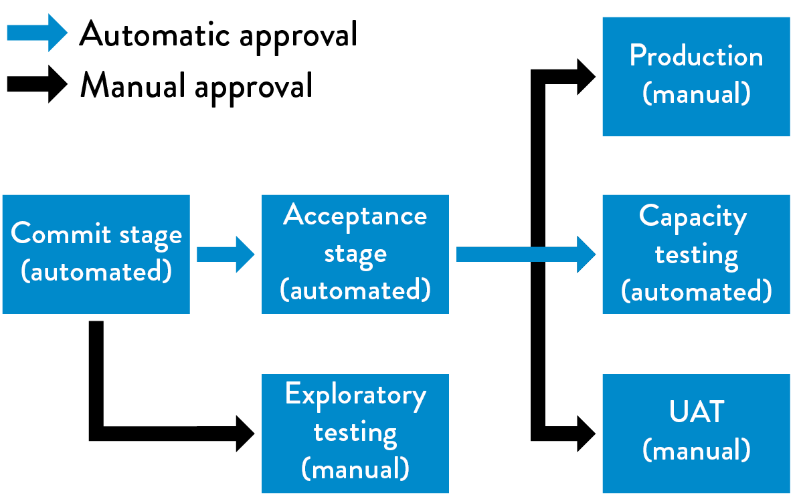

10Enable Fast and Reliable Automated Testing
At this point, Development and QA are using production-like environments in their daily work, and we are successfully integrating and running our code into a production-like environment for every feature that is accepted, with all changes checked in to version control. However, we are likely to get undesired outcomes if we find and fix errors in a separate test phase, executed by a separate QA department only after all development has been completed. And, if testing is only performed a few times a year, developers learn about their mistakes months after they introduced the change that caused the error. By then, the link between cause and effect has likely faded, solving the problem requires firefighting and archaeology, and, worst of all, our ability to learn from the mistake and integrate it into our future work is significantly diminished.
Automated testing addresses another significant and unsettling problem. Gary Gruver observes that “without automated testing, the more code we write, the more time and money is required to test our code—in most cases, this is a totally unscalable business model for any technology organization.”
Although Google now undoubtedly exemplifies a culture that values automated testing at scale, this wasn’t always the case. In 2005, when Mike Bland joined the organization, deploying to Google.com was often extremely problematic, especially for the Google Web Server (GWS) team.
As Bland explains, “The GWS team had gotten into a position in the mid 2000s where it was extremely difficult to make changes to the web server, a C++ application that handled all requests to Google’s home page and many other Google web pages. As important and prominent as Google.com was, being on the GWS team was not a glamorous assignment—it was often the dumping ground for all the different teams who were creating various search functionality, all of whom were developing code independently of each other. They had problems such as builds and tests taking too long, code being put into production without being tested, and teams checking in large, infrequent changes that conflicted with those from other teams.”
The consequences of this were large—search results could have errors or become unacceptably slow, affecting thousands of search queries on Google.com. The potential result was not only loss of revenue, but customer trust.
Bland describes how it affected developers deploying changes, “Fear became the mind-killer. Fear stopped new team members from changing things because they didn’t understand the system. But fear also stopped experienced people from changing things because they understood it all too well.”† Bland was part of the group that was determined to solve this problem.
GWS team lead Bharat Mediratta believed automated testing would help. As Bland describes, “They created a hard line: no changes would be accepted into GWS without accompanying automated tests. They set up a continuous build and religiously kept it passing. They set up test coverage monitoring and ensured that their level of test coverage went up over time. They wrote up policy and testing guides, and insisted that contributors both inside and outside the team follow them.”
The results were startling. As Bland notes, “GWS quickly became one of the most productive teams in the company, integrating large numbers of changes from different teams every week while maintaining a rapid release schedule. New team members were able to make productive contributions to this complex system quickly, thanks to good test coverage and code health. Ultimately, their radical policy enabled the Google.com home page to quickly expand its capabilities and thrive in an amazingly fast-moving and competitive technology landscape.”
But GWS was still a relatively small team in a large and growing company. The team wanted to expand these practices across the entire organization. Thus, the Testing Grouplet was born, an informal group of engineers who wanted to elevate automated testing practices across the entire organization. Over the next five years, they helped replicate this culture of automated testing across all of Google.‡
Now when any Google developer commits code, it is automatically run against a suite of hundreds of thousands of automated tests. If the code passes, it is automatically merged into trunk, ready to be deployed into production. Many Google properties build hourly or daily, then pick which builds to release; others adopt a continuous “Push on Green” delivery philosophy.
The stakes are higher than ever—a single code deployment error at Google can take down every property, all at the same time (such as a global infrastructure change or when a defect is introduced into a core library that every property depends upon).
Eran Messeri, an engineer in the Google Developer Infrastructure group, notes, “Large failures happen occasionally. You’ll get a ton of instant messages and engineers knocking on your door. [When the deployment pipeline is broken,] we need to fix it right away, because developers can no longer commit code. Consequently, we want to make it very easy to roll back.”
What enables this system to work at Google is engineering professionalism and a high-trust culture that assumes everyone wants to do a good job, as well as the ability to detect and correct issues quickly. Messeri explains, “There are no hard policies at Google, such as, ‘If you break production for more than ten projects, you have an SLA to fix the issue within ten minutes.’ Instead, there is mutual respect between teams and an implicit agreement that everyone does whatever it takes to keep the deployment pipeline running. We all know that one day, I’ll break your project by accident; the next day, you may break mine.”
What Mike Bland and the Testing Grouplet team achieved has made Google one of the most productive technology organizations in the world. By 2013, automated testing and continuous integration at Google enabled over four thousand small teams to work together and stay productive, all simultaneously developing, integrating, testing, and deploying their code into production. All their code is in a single, shared repository, made up of billions of files, all being continuously built and integrated, with 50% of their code being changed each month. Some other impressive statistics on their performance include:
- 40,000 code commits/day
- 50,000 builds/day (on weekdays, this may exceed 90,000)
- 120,000 automated test suites
- 75 million test cases run daily
- 100+ engineers working on the test engineering, continuous integration, and release engineering tooling to increase developer productivity (making up 0.5% of the R&D workforce)
In the remainder of this chapter, we will go through the continuous integration practices required to replicate these outcomes.
CONTINUOUSLY BUILD, TEST, AND INTEGRATE OUR CODE AND ENVIRONMENTS
Our goal is to build quality into our product, even at the earliest stages, by having developers build automated tests as part of their daily work. This creates a fast feedback loop that helps developers find problems early and fix them quickly, when there are the fewest constraints (e.g., time, resources).
In this step, we create automated test suites that increase the frequency of integration and testing of our code and our environments from periodic to continuous. We do this by building our deployment pipeline, which will perform integration of our code and environments and trigger a series of tests every time a new change is put into version control.§ (See figure 13.)
The deployment pipeline, first defined by Jez Humble and David Farley in their book Continuous Delivery: Reliable Software Releases Through Build, Test, and Deployment Automation, ensures that all code checked in to version control is automatically built and tested in a production-like environment. By doing this, we find any build, test, or integration errors as soon as a change is introduced, enabling us to fix them immediately. Done correctly, this allows us to always be assured that we are in a deployable and shippable state.
To achieve this, we must create automated build and test processes that run in dedicated environments. This is critical for the following reasons:
- Our build and test process can run all the time, independent of the work habits of individual engineers.
- A segregated build and test process ensures that we understand all the dependencies required to build, package, run, and test our code (i.e., removing the “it worked on the developer’s laptop, but it broke in production” problem).
- We can package our application to enable the repeatable installation of code and configurations into an environment (e.g., on Linux RPM, yum, npm; on Windows, OneGet; alternatively framework-specific packaging systems can be used, such as EAR and WAR files for Java, gems for Ruby, etc.).
- Instead of putting our code in packages, we may choose to package our applications into deployable containers (e.g., Docker, Rkt, LXD, AMIs).
- Environments can be made more production-like in a way that is consistent and repeatable (e.g., compilers are removed from the environment, debugging flags are turned off, etc.).
Our deployment pipeline validates after every change that our code successfully integrates into a production-like environment. It becomes the platform through which testers request and certify builds during acceptance testing and usability testing, and it will run automated performance and security validations.
> Figure 13: The deployment pipeline (Source: Humble and Farley, Continuous Delivery, 3.)
Furthermore, it will be used to self-service builds to UAT (user acceptance testing), integration testing, and security testing environments. In future steps, as we evolve the deployment pipeline, it will also be used to manage all activities required to take our changes from version control to deployment.
A variety of tools have been designed to provide deployment pipeline functionality, many of them open source (e.g., Jenkins, ThoughtWorks Go, Concourse, Bamboo, Microsoft Team Foundation Server, TeamCity, Gitlab CI, as well as cloud-based solutions such as Travis CI and Snap).¶
We begin the deployment pipeline by running the commit stage, which builds and packages the software, runs automated unity tests, and performs additional validation such as static code analysis, duplication and test coverage analysis, and checking style.** If successful, this triggers the acceptance stage, which automatically deploys the packages created in the commit stage into a production-like environment and runs the automated acceptance tests.
Once changes are accepted into version control, we want to package our code only once, so that the same packages are used to deploy code throughout our entire deployment pipeline. By doing this, code will be deployed into our integrated test and staging environments in the same way that it is deployed into production. This reduces variances that can avoid downstream errors that are difficult to diagnose (e.g., using different compilers, compiler flags, library versions, or configurations).††
The goal of the deployment pipeline is to provide everyone in the value stream, especially developers, the fastest possible feedback that a change has taken us out of a deployable state. This could be a change to our code, to any of our environments, to our automated tests, or even to the deployment pipeline infrastructure (e.g., a Jenkins configuration setting).
As a result, our deployment pipeline infrastructure becomes as foundational for our development processes as our version control infrastructure. Our deployment pipeline also stores the history of each code build, including information about which tests were performed on which build, which builds have been deployed to which environment, and what the test results were. In combination with the information in our version control history, we can quickly determine what caused our deployment pipeline to break and, likely, how to fix the error.
This information also helps us fulfill evidence requirements for audit and compliance purposes, with evidence being automatically generated as part of daily work.
Now that we have a working deployment pipeline infrastructure, we must create our continuous integration practices, which require three capabilities:
- A comprehensive and reliable set of automated tests that validate we are in a deployable state.
- A culture that “stops the entire production line” when our validation tests fail.
- Developers working in small batches on trunk rather than long-lived feature branches.
In the next section, we describe why fast and reliable automated testing is needed and how to build it.
BUILD A FAST AND RELIABLE AUTOMATED VALIDATION TEST SUITE
In the previous step, we started to create the automated testing infrastructure that validates that we have a green build (i.e., whatever is in version control is in a buildable and deployable state). To underscore why we need to perform this integration and testing step continuously, consider what happens when we only perform this operation periodically, such as during a nightly build process.
Suppose we have a team of ten developers, with everyone checking their code into version control daily, and a developer introduces a change that breaks our nightly build and test job. In this scenario, when we discover the next day that we no longer have a green build, it will take minutes, or more likely hours, for our development team to figure out which change caused the problem, who introduced it, and how to fix it.
Worse, suppose the problem wasn’t caused by a code change, but was due to a test environment issue (e.g., an incorrect configuration setting somewhere). The development team may believe that they fixed the problem because all the unit tests pass, only to discover that the tests will still fail later that night.
Further complicating the issue, ten more changes will have been checked in to version control by the team that day. Each of these changes has the potential to introduce more errors that could break our automated tests, further increasing the difficulty of successfully diagnosing and fixing the problem.
In short, slow and periodic feedback kills. Especially for larger development teams. The problem becomes even more daunting when we have tens, hundreds, or even thousands of other developers checking their changes into version control each day. The result is that our builds and automated tests are frequently broken, and developers even stop checking their changes into version control (“Why bother, since the builds and tests are always broken?”). Instead they wait to integrate their code at the end of the project, resulting in all the undesired outcomes of large batch size, big bang integrations, and production deployments.‡‡
To prevent this scenario, we need fast automated tests that run within our build and test environments whenever a new change is introduced into version control. In this way we can find and fix any problems immediately, as the Google Web Server example demonstrated. By doing this, we ensure our batches remains small, and, at any given point in time, we remain in a deployable state.
In general, automated tests fall into one of the following categories, from fastest to slowest:
- Unit tests: These typically test a single method, class, or function in isolation, providing assurance to the developer that their code operates as designed. For many reasons, including the need to keep our tests fast and stateless, unit tests often “stub out” databases and other external dependencies (e.g., functions are modified to return static, predefined values, instead of calling the real database).§§
- Acceptance tests: These typically test the application as a whole to provide assurance that a higher level of functionality operates as designed (e.g., the business acceptance criteria for a user story, the correctness of an API), and that regression errors have not been introduced (i.e., we broke functionality that was previously operating correctly). Humble and Farley define the difference between unit and acceptance testing as, “The aim of a unit test is to show that a single part of the application does what the programmer intends it to....The objective of acceptance tests is to prove that our application does what the customer meant it to, not that it works the way its programmers think it should.” After a build passes our unit tests, our deployment pipeline runs it against our acceptance tests. Any build that passes our acceptance tests is then typically made available for manual testing (e.g., exploratory testing, UI testing, etc.), as well as for integration testing.
- Integration tests: Integration tests are where we ensure that our application correctly interacts with other production applications and services, as opposed to calling stubbed out interfaces. As Humble and Farley observe, “much of the work in the SIT environment involves deploying new versions of each of the applications until they all cooperate. In this situation the smoke test is usually a fully fledged set of acceptance tests that run against the whole application.” Integration tests are performed on builds that have passed our unit and acceptance tests. Because integration tests are often brittle, we want to minimize the number of integration tests and find as many of our defects as possible during unit and acceptance testing. The ability to use virtual or simulated versions of remote services when running acceptance tests becomes an essential architectural requirement.
When facing deadline pressures, developers may stop creating unit tests as part of their daily work, regardless of how we’ve defined ‘done.’ To detect this, we may choose to measure and make visible our test coverage (as a function of number of classes, lines of code, permutations, etc.), maybe even failing our validation test suite when it drops below a certain level (e.g., when less than 80% of our classes have unit tests).¶¶
Martin Fowler observes that, in general, “a ten-minute build [and test process] is perfectly within reason…[We first] do the compilation and run tests that are more localized unit tests with the database completely stubbed out. Such tests can run very fast, keeping within the ten minute guideline. However any bugs that involve larger scale interactions, particularly those involving the real database, won’t be found. The second stage build runs a different suite of tests [acceptance tests] that do hit the real database and involve more end-to-end behavior. This suite may take a couple of hours to run.”
CATCH ERRORS AS EARLY IN OUR AUTOMATED TESTING AS POSSIBLE
A specific design goal of our automated test suite is to find errors as early in the testing as possible. This is why we run faster-running automated tests (e.g., unit tests) before slower-running automated tests (e.g., acceptance and integration tests), which are both run before any manual testing.
Another corollary of this principle is that any errors should be found with the fastest category of testing possible. If most of our errors are found in our acceptance and integration tests, the feedback we provide to developers is orders of magnitude slower than with unit tests—and integration testing requires using scarce and complex integration test environments, which can only be used by one team at a time, further delaying feedback.
Furthermore, not only are errors detected during integration testing difficult and time-consuming for developers to reproduce, even validating that it has been fixed is difficult (i.e., a developer creates a fix but then needs to wait four hours to learn whether the integration tests now pass).
Therefore, whenever we find an error with an acceptance or integration test, we should create a unit test that could find the error faster, earlier, and cheaper. Martin Fowler described the notion of the “ideal testing pyramid,” where we are able to catch most of our errors using our unit tests. (See figure 14.) In contrast, in many testing programs the inverse is true, where most of the investment is in manual and integration testing.
Figure 14: The ideal and non-ideal automated testing pyramids (Source: Martin Fowler, “TestPyramid.”)
If we find that unit or acceptance tests are too difficult and expensive to write and maintain, it’s likely that we have an architecture that is too tightly-coupled, where strong separation between our module boundaries no longer exist (or maybe never existed). In this case, we will need to create a more loosely-coupled system so modules can be independently tested without integration environments. Acceptance test suites for even the most complex applications that run in minutes are possible.
ENSURE TESTS RUN QUICKLY (IN PARALLEL, IF NECESSARY)
Because we want our tests to run quickly, we need to design our tests to run in parallel, potentially across many different servers. We may also want to run different categories of tests in parallel. For example, when a build passes our acceptance tests, we may run our performance testing in parallel with our security testing, as shown in figure 15. We may or may not allow manual exploratory testing until the build has passed all our automated tests—which enables faster feedback, but may also allow manual testing on builds that will eventually fail.
We make any build that passes all our automated tests available to use for exploratory testing, as well as for other forms of manual or resource-intensive testing (such as performance testing). We want to do all such testing as frequently as possible and practical, either continually or on a schedule.
 Figure 15: Running automated and manual tests in parallel
(Source: Humble and Farley, Continuous Delivery, Kindle edition, location 3868.)
Any tester (which includes all our developers) should use the latest build that has passed all the automated tests, as opposed to waiting for developers to flag a specific build as ready to test. By doing this, we ensure that testing happens as early in the process as possible.
WRITE OUR AUTOMATED TESTS BEFORE WE WRITE THE CODE (“TEST-DRIVEN DEVELOPMENT”)
One of the most effective ways to ensure we have reliable automated testing, is to write those tests as part of our daily work, using techniques such as test-driven development (TDD) and acceptance test-driven development (ATDD). This is when we begin every change to the system by first writing an automated test that validates the expected behavior fails, and then we write the code to make the tests pass.
This technique was developed by Kent Beck in the late 1990s as part of Extreme Programming, and has the following three steps:
- Ensure the tests fail. “Write a test for the next bit of functionality you want to add.” Check in.
- Ensure the tests pass. “Write the functional code until the test passes.”Check in.
- “Refactor both new and old code to make it well structured.”Ensure the tests pass. Check in again.
These automated test suites are checked in to version control alongside our code, which provides a living, up-to-date specification of the system. Developers wishing to understand how to use the system can look at this test suite to find working examples of how to use the system’s API.***
AUTOMATE AS MANY OF OUR MANUAL TESTS AS POSSIBLE
Our goal is to find as many code errors through our automated test suites, reducing our reliance on manual testing. In her 2013 presentation at Flowcon titled “On the Care and Feeding of Feedback Cycles,” Elisabeth Hendrickson observed, “Although testing can be automated, creating quality cannot. To have humans executing tests that should be automated is a waste of human potential.”
By doing this, we enable all our testers (which, of course, includes developers) work on high-value activities that cannot be automated, such as exploratory testing or improving the test process itself.
However, merely automating all our manual tests may create undesired outcomes—we do not want automated tests that are unreliable or generate false positives (i.e., tests that should have passed because the code is functionally correct but failed due to problems such as slow performance, causing timeouts, uncontrolled starting state, or unintended state due to using database stubs or shared test environments).
Unreliable tests that generate false positives create significant problems—they waste valuable time (e.g., forcing developers to re-run the test to determine whether there is actually a problem), increase the overall effort of running and interpreting our test results, and often result in stressed developers ignoring test results entirely or turning off the automated tests in favor of focusing on creating code.
The result is always the same: we detect the problems later, the problems are more difficult to fix, and our customers have worse outcomes, which in turn creates stress across the value stream.
To mitigate of this, a small number of reliable, automated tests are almost always preferable over a large number of manual or unreliable automated tests. Therefore, we focus on automating only the tests that genuinely validate the business goals we are trying to achieve. If abandoning a test results in production defects, we should add it back to our manual test suite, with the ideal of eventually automating it.
As Gary Gruver, formerly VP of Quality Engineering, Release Engineering, and Operations for Macys.com, described observes, “For a large retailer e-commerce site, we went from running 1,300 manual tests that we ran every ten days to running only ten automated tests upon every code commit—it’s far better to run a few tests that we trust than to run tests that aren’t reliable. Over time, we grew this test suite to having hundreds of thousands of automated tests.”
In other words, we start with a small number of reliable automated tests and add to them over time, creating an ever-increasing level of assurance that we will quickly detect any changes to the system that take us out of a deployable state.
INTEGRATE PERFORMANCE TESTING INTO OUR TEST SUITE
All too often, we discover that our application performs poorly during integration testing or after it has been deployed to production. Performance problems are often difficult to detect, such as when things slow down over time, going unnoticed until it is too late (e.g., database queries without an index). And many problems are difficult to solve, especially when they are caused by architectural decisions we made or unforeseen limitations of our networking, database, storage, or other systems.
Our goal is to write and run automated performance tests that validate our performance across the entire application stack (code, database, storage, network, virtualization, etc.) as part of the deployment pipeline, so we detect problems early, when the fixes are cheapest and fastest.
By understanding how our application and environments behave under a production-like load, we can do a far better job at capacity planning, as well as detecting conditions such as:
- When our database query times grow non-linearly (e.g., we forget to turn on database indexing, and page load goes from one hundred minutes to thirty seconds).
- When a code change causes the number of database calls, storage use, or network traffic to increase ten-fold.
When we have acceptance tests that are able to be run in parallel, we can use them as the basis of our performance tests. For instance, suppose we run an e-commerce site and have identified “search” and “checkout” as two high-value operations that must perform well under load. To test this, we may run thousands of parallel search acceptance tests simultaneously with thousands of parallel checkout tests.
Due to the large amount of compute and I/O that is required to run performance tests, creating a performance testing environment can easily be more complex than creating the production environment for the application itself. Because of this, we may build our performance testing environment at the start of any project and ensure that we dedicate whatever resources are required to build it early and correctly.
To find performance problems early, we should log performance results and evaluate each performance run against previous results. For instance, we might fail the performance tests if performance deviates more than 2% from the previous run.
INTEGRATE NON-FUNCTIONAL REQUIREMENTS TESTING INTO OUR TEST SUITE
In addition to testing that our code functions as designed and it performs under production-like loads, we also want to validate every other attribute of the system we care about. These are often called non-functional requirements, which include availability, scalability, capacity, security, and so forth.
Many of these requirements are fulfilled by the correct configuration of our environments, so we must also build automated tests to validate that our environments have been built and configured properly. For example, we want to enforce the consistency and correctness of the following, which many non-functional requirements rely upon (e.g., security, performance, availability):
- Supporting applications, databases, libraries, etc.
- Language interpreters, compilers, etc.
- Operating systems (e.g., audit logging enabled, etc.)
- All dependencies
When we use infrastructure as code configuration management tools (e.g., Puppet, Chef, Ansible, Salt, Bosh), we can use the same testing frameworks that we use to test our code to also test that our environments are configured and operating correctly (e.g., encoding environment tests into cucumber or gherkin tests).
Furthermore, similar to how we run analysis tools on our application in our deployment pipeline (e.g., static code analysis, test coverage analysis), we should run tools that analyze the code that constructs our environments (e.g., Foodcritic for Chef, puppet-lint for Puppet). We should also run any security hardening checks as part of our automated tests to ensure that everything is configured securely and correctly (e.g., server-spec).
At any point in time, our automated tests can validate that we have a green build and that we are in a deployable state. Now, we must create an Andon cord so that when someone breaks the deployment pipeline, we take all necessary steps to get back into a green build state.
PULL OUR ANDON CORD WHEN THE DEPLOYMENT PIPELINE BREAKS
When we have a green build in our deployment pipeline, we have a high degree of confidence that our code and environment will operate as designed when we deploy our changes into production.
In order to keep our deployment pipeline in a green state, we will create a virtual Andon Cord, similar to the physical one in the Toyota Production System. Whenever someone introduces a change that causes our build or automated tests to fail, no new work is allowed to enter the system until the problem is fixed. And if someone needs help to resolve the problem, they can bring in whatever help they need, as in the Google example at the beginning of this chapter.
When our deployment pipeline is broken, at a minimum, we notify the entire team of the failure, so anyone can either fix the problem or roll-back the commit. We may even configure the version control system to prevent further code commits until the first stage (i.e., builds and unit tests) of the deployment pipeline is back in a green state. If the problem was due to an automated test generating a false positive error, the offending test should either be rewritten or removed.††† Every member of the team should be empowered to roll back the commit to get back into a green state.
Randy Shoup, former engineering director for Google App Engine, wrote about the importance of bringing the deployment back into a green state. “We prioritize the team goals over individual goals—whenever we help someone move their work forward, we help the entire team. This applies whether we’re helping someone fix the build or an automated test, or even performing a code review for them. And of course, we know that they’ll do the same for us, when we need help. This system worked without a lot of formality or policy—everyone knew that our job was not just ‘write code,’ but it was to ‘run a service.’ This is why we prioritized all quality issues, especially those related to reliability and scaling, at the highest level, treating them as a Priority 0 ‘show-stopper’ problems. From a systems perspective, these practices keep us from slipping backwards.”
When later stages of the deployment pipeline fail, such as acceptance tests or performance tests, instead of stopping all new work, we will have developers and testers on-call who are responsible for fixing these problems immediately. They should also create new tests that run at an earlier stage in the deployment pipeline to catch any future regressions. For example, if we discover a defect in our acceptance tests, we should write a unit test to catch the problem. Similarly, if we discover a defect in exploratory testing, we should write a unit or acceptance test.
To increase the visibility of automated test failures, we should create highly visible indicators so that the entire team can see when our build or automated tests are failing. Many teams have created highly visible build lights that get mounted on a wall, indicating the current build status, or other fun ways of telling the team the build is broken, including lava lamps, playing a voice sample or song, klaxons, traffic lights, and so forth.
In many ways, this step is more challenging than creating our builds and test servers—those were purely technical activities, whereas this step requires changing human behavior and incentives. However, continuous integration and continuous delivery require these changes, as we explore in the next section.
WHY WE NEED TO PULL THE ANDON CORD
The consequence of not pulling the Andon cord and immediately fixing any deployment pipeline issues results in the all too familiar problem where it becomes ever more difficult to bring our applications and environment back into a deployable state. Consider the following situation:
- Someone checks in code that breaks the build or our automated tests, but no one fixes it.
- Someone else checks in another change onto the broken build, which also doesn’t pass our automated tests—but no one sees the failing test results which would have enabled us to see the new defect, let alone fix it.
- Our existing tests don’t run reliably, so we are very unlikely to build new tests. (Why bother? We can’t even get the current tests to run.)
When this happens, our deployments to any environment become as unreliable as when we had no automated tests or were using a waterfall method, where the majority of our problems are being discovered in production. The inevitable outcome of this vicious cycle is that we end up where we started, with an unpredictable “stabilization phase” that takes weeks or months where our whole team is plunged into crisis, trying to get all our tests to pass, taking shortcuts because of deadline pressures, and adding to our technical debt.‡‡‡
CONCLUSION
In this chapter, we have created a comprehensive set of automated tests to confirm that we have a green build that is still in a passing and deployable state. We have organized our test suites and testing activities into a deployment pipeline. We have also created the cultural norm of doing whatever it takes to get back into a green build state if someone introduces a change that breaks any of our automated tests.
By doing this, we set the stage for implementing continuous integration, which allows many small teams to independently and safely develop, test, and deploy code into production, delivering value to customers.

Table of contents
- Preface
- Foreword
- Imagine a World Where Dev and Ops Become DevOps
-
Part I The Three Ways
- A BRIEF HISTORY
- 1 Agile, Continuous Delivery, and the Three Ways
- 2 The First Way: The Principles of Flow
- 3 The Second Way: The Principles of Feedback
- 4 The Third Way: The Principles of Continual Learning and Experimentation
-
Part II Where to Start
- Introduction
- 5 Selecting Which Value Stream to Start With
- 6 Understanding the Work in Our Value Stream, Making it Visible, and Expanding it Across the Organization
-
7 How to Design Our Organization and Architecture with Conway’s Law in Mind
- ORGANIZATIONAL ARCHETYPES
- PROBLEMS OFTEN CAUSED BY OVERLY FUNCTIONAL ORIENTATION (“OPTIMIZING FOR COST”)
- ENABLE MARKET-ORIENTED TEAMS (“OPTIMIZING FOR SPEED”)
- MAKING FUNCTIONAL ORIENTATION WORK
- TESTING, OPERATIONS, AND SECURITY AS EVERYONE’S JOB, EVERY DAY
- ENABLE EVERY TEAM MEMBER TO BE A GENERALIST
- FUND NOT PROJECTS, BUT SERVICES AND PRODUCTS
- DESIGN TEAM BOUNDARIES IN ACCORDANCE WITH CONWAY’S LAW
- CREATE LOOSELY-COUPLED ARCHITECTURES TO ENABLE DEVELOPER PRODUCTIVITY AND SAFETY
- CONCLUSION
- 8 How to Get Great Outcomes by Integrating Operations into the Daily Work of Development
-
PART III—THE FIRST WAY: THE TECHNICAL PRACTICES OF FLOW
- 9 Create the Foundations of Our Deployment Pipeline
-
10 Enable Fast and Reliable Automated Testing
- CONTINUOUSLY BUILD, TEST, AND INTEGRATE OUR CODE AND ENVIRONMENTS
-
BUILD A FAST AND RELIABLE AUTOMATED VALIDATION TEST SUITE
- CATCH ERRORS AS EARLY IN OUR AUTOMATED TESTING AS POSSIBLE
- ENSURE TESTS RUN QUICKLY (IN PARALLEL, IF NECESSARY)
- WRITE OUR AUTOMATED TESTS BEFORE WE WRITE THE CODE (“TEST-DRIVEN DEVELOPMENT”)
- AUTOMATE AS MANY OF OUR MANUAL TESTS AS POSSIBLE
- INTEGRATE PERFORMANCE TESTING INTO OUR TEST SUITE
- INTEGRATE NON-FUNCTIONAL REQUIREMENTS TESTING INTO OUR TEST SUITE
- PULL OUR ANDON CORD WHEN THE DEPLOYMENT PIPELINE BREAKS
- CONCLUSION
- 11 Enable and Practice Continuous Integration
- 12 Automate and Enable Low-Risk Releases
- 13 Architect for Low-Risk Releases
-
PART IV—THE SECOND WAY: THE TECHNICAL PRACTICES OF FEEDBACK
- Introduction
-
14 Create Telemetry to Enable Seeing and Solving Problems
- CREATE OUR CENTRALIZED TELEMETRY INFRASTRUCTURE
- CREATE APPLICATION LOGGING TELEMETRY THAT HELPS PRODUCTION
- USE TELEMETRY TO GUIDE PROBLEM SOLVING
- ENABLE CREATION OF PRODUCTION METRICS AS PART OF DAILY WORK
- CREATE SELF-SERVICE ACCESS TO TELEMETRY AND INFORMATION RADIATORS
- FIND AND FILL ANY TELEMETRY GAPS
- CONCLUSION
- 15 Analyze Telemetry to Better Anticipate Problems and Achieve Goals
- 16 Enable Feedback So Development and Operations Can Safely Deploy Code
- 17 Integrate Hypothesis-Driven Development and A/B Testing into Our Daily Work
-
18 Create Review and Coordination Processes to Increase Quality of Our Current Work
- THE DANGERS OF CHANGE APPROVAL PROCESSES
- POTENTIAL DANGERS OF “OVERLY CONTROLLING CHANGES”
- ENABLE COORDINATION AND SCHEDULING OF CHANGES
- ENABLE PEER REVIEW OF CHANGES
- POTENTIAL DANGERS OF DOING MORE MANUAL TESTING AND CHANGE FREEZES
- ENABLE PAIR PROGRAMMING TO IMPROVE ALL OUR CHANGES
- FEARLESSLY CUT BUREAUCRATIC PROCESSES
- CONCLUSION
- PART IV CONCLUSION
-
PART V—THE THIRD WAY: THE TECHNICAL PRACTICES OF CONTINUAL LEARNING AND EXPERIMENTATION
- Introduction
-
19 Enable and Inject Learning into Daily Work
- ESTABLISH A JUST, LEARNING CULTURE
- SCHEDULE BLAMELESS POST-MORTEM MEETINGS AFTER ACCIDENTS OCCUR
- PUBLISH OUR POST-MORTEMS AS WIDELY AS POSSIBLE
- DECREASE INCIDENT TOLERANCES TO FIND EVER-WEAKER FAILURE SIGNALS
- REDEFINE FAILURE AND ENCOURAGE CALCULATED RISK-TAKING
- INJECT PRODUCTION FAILURES TO ENABLE RESILIENCE AND LEARNING
- INSTITUTE GAME DAYS TO REHEARSE FAILURES
- CONCLUSION
-
20 Convert Local Discoveries into Global Improvements
- USE CHAT ROOMS AND CHAT BOTS TO AUTOMATE AND CAPTURE ORGANIZATIONAL KNOWLEDGE
- AUTOMATE STANDARDIZED PROCESSES IN SOFTWARE FOR RE-USE
- CREATE A SINGLE, SHARED SOURCE CODE REPOSITORY FOR OUR ENTIRE ORGANIZATION
- SPREAD KNOWLEDGE BY USING AUTOMATED TESTS AS DOCUMENTATION AND COMMUNITIES OF PRACTICE
- DESIGN FOR OPERATIONS THROUGH CODIFIED NON-FUNCTIONAL REQUIREMENTS
- BUILD REUSABLE OPERATIONS USER STORIES INTO DEVELOPMENT
- ENSURE TECHNOLOGY CHOICES HELP ACHIEVE ORGANIZATIONAL GOALS
- CONCLUSION
- 21 Reserve Time to Create Organizational Learning and Improvement
-
22 Information Security as Everyone’s Job, Every Day
- INTEGRATE SECURITY INTO DEVELOPMENT ITERATION DEMONSTRATIONS
- INTEGRATE SECURITY INTO DEFECT TRACKING AND POST-MORTEMS
- INTEGRATE PREVENTIVE SECURITY CONTROLS INTO SHARED SOURCE CODE REPOSITORIES AND SHARED SERVICES
- INTEGRATE SECURITY INTO OUR DEPLOYMENT PIPELINE
- ENSURE SECURITY OF THE APPLICATION
- ENSURE SECURITY OF OUR SOFTWARE SUPPLY CHAIN
- ENSURE SECURITY OF THE ENVIRONMENT
- INTEGRATE INFORMATION SECURITY INTO PRODUCTION TELEMETRY
- CREATING SECURITY TELEMETRY IN OUR APPLICATIONS
- CREATING SECURITY TELEMETRY IN OUR ENVIRONMENT
- PROTECT OUR DEPLOYMENT PIPELINE
- CONCLUSION
-
23 Protecting the Deployment Pipeline
- INTEGRATE SECURITY AND COMPLIANCE INTO CHANGE APPROVAL PROCESSES
- RE-CATEGORIZE THE MAJORITY OF OUR LOWER RISK CHANGES AS STANDARD CHANGES
- WHAT TO DO WHEN CHANGES ARE CATEGORIZED AS NORMAL CHANGES
- REDUCE RELIANCE ON SEPARATION OF DUTY
- ENSURE DOCUMENTATION AND PROOF FOR AUDITORS AND COMPLIANCE OFFICERS
- CONCLUSION
- PART VI CONCLUSION
- A Call to Action
-
Appendices
- APPENDIX 1 THE CONVERGENCE OF DEVOPS
- APPENDIX 2 THEORY OF CONSTRAINTS AND CORE, CHRONIC CONFLICTS
- APPENDIX 3 TABULAR FORM OF DOWNWARD SPIRAL
- APPENDIX 4 THE DANGERS OF HANDOFFS AND QUEUES
- APPENDIX 5 MYTHS OF INDUSTRIAL SAFETY
- APPENDIX 6 THE TOYOTA ANDON CORD
- APPENDIX 7 COTS SOFTWARE
- APPENDIX 8 POST-MORTEM MEETINGS
- APPENDIX 9 THE SIMIAN ARMY
- APPENDIX 10 TRANSPARENT UPTIME
- Additional Resources
- Endnotes
- Index
- Acknowledgments
- Author Biographies